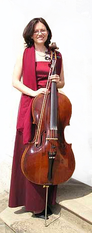
Milada Gajdová
violoncello
Právě připravuje:
projekt Národní knihovny - výstava starých tisků not mimo jiné i s díly violoncellových virtuózů 19. století v Praze, jejichž díla spolu s vynikající klavíriskou Ludmilou ŠMÍDOVOU znovu uvádí v život a jejichž nahrávka zní v rámci expozice

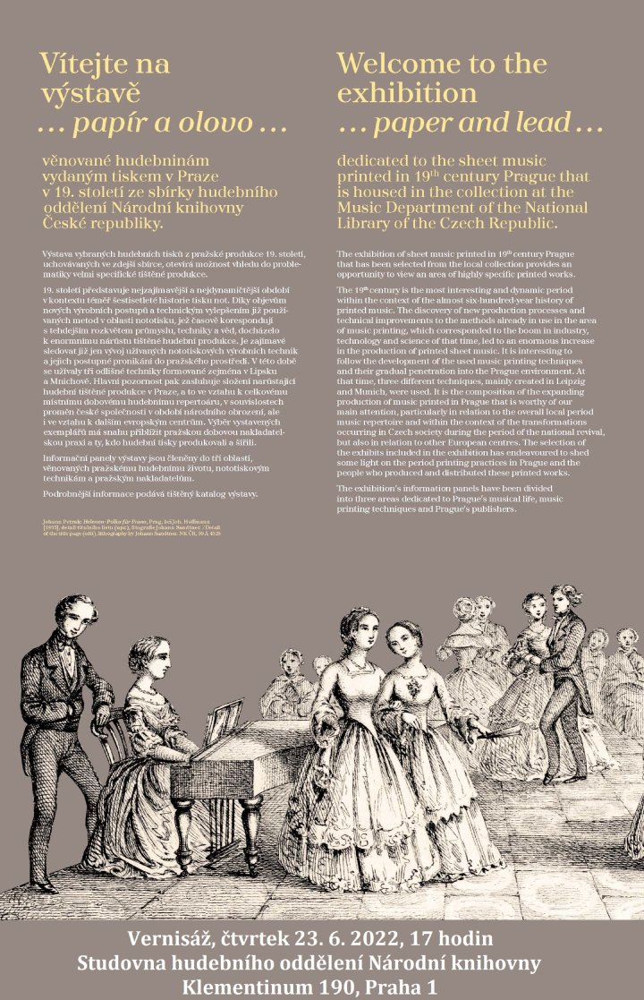

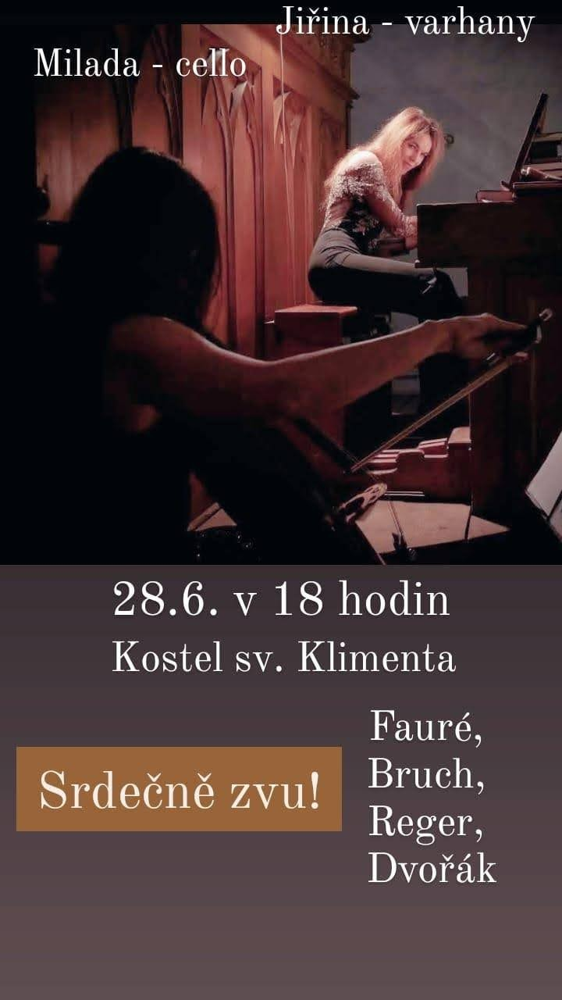

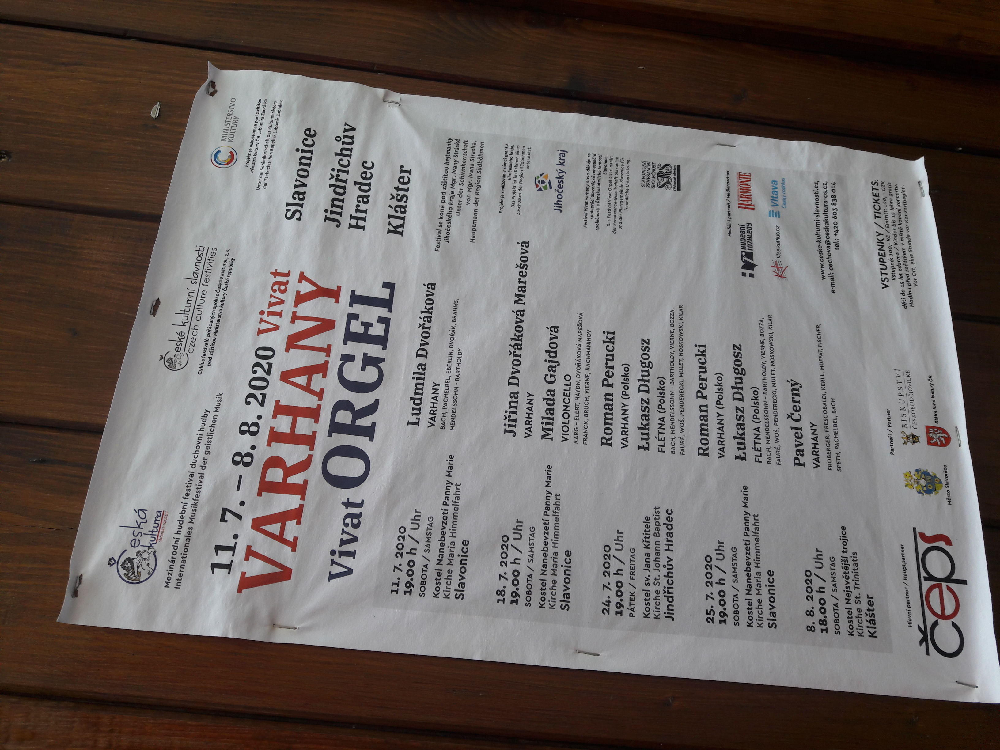

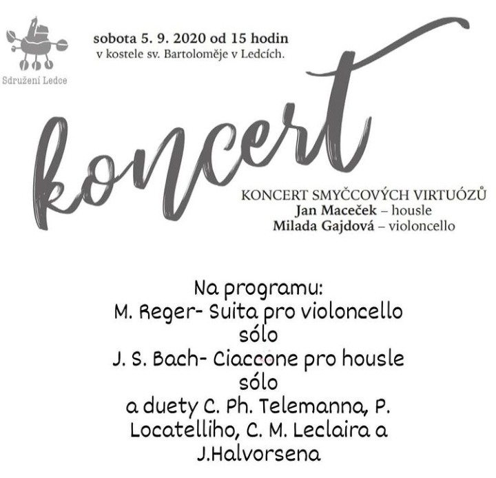

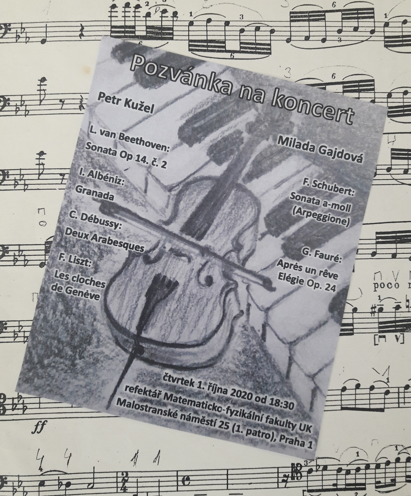

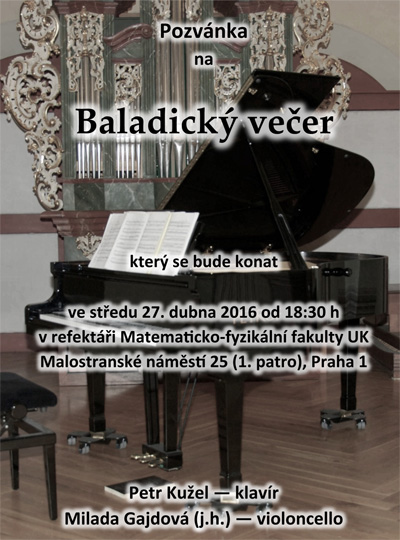

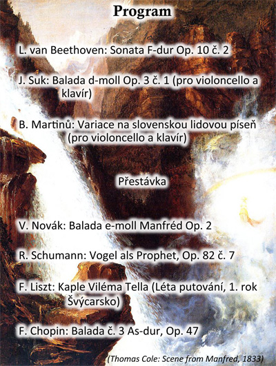

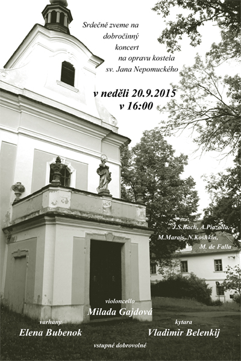
Violoncello a kytara :
Vladimír Bělenkij - kytara
20.6. 2015 Svárov
Koncert komorní hudby - Na programu skladby J.S. Bacha, E. Granadosse, C. Saint- Saense, M. de Fally
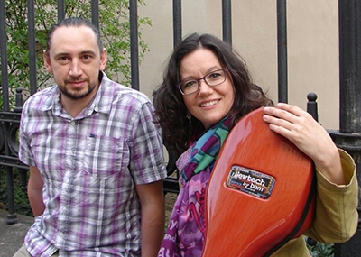
Violoncello s klavírem:
Elena Bubenok - klavír
Francouzská hudba 18.1. 2015 Hudebni salon Atelieru Stradivari
Francouzská hudba v proměnách staletí - Na programu skladby F. Couperina, M. Maraise, C. Francka a c. Debussyho
Romantické violoncello - Na programu skladby A. Dvořáka, J. Suka a sonáty J. Brahmse, C. Francka
Česká hudba - Na programu Sonáta a Variace B. Martinů, Skladby A. Dvořáka a J. Suka a L. Sluky
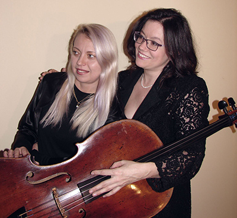